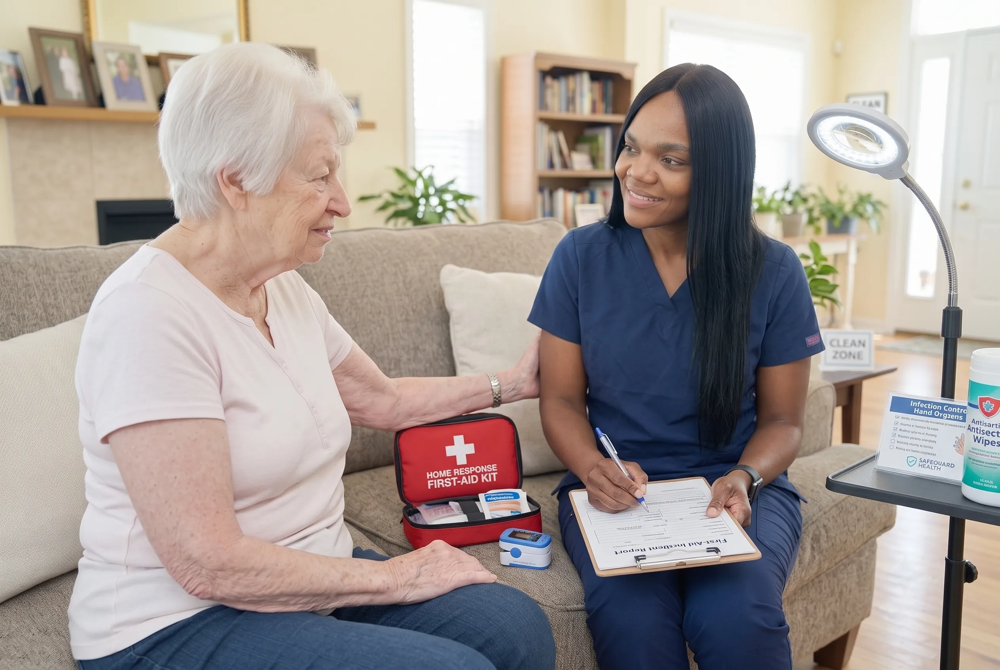

Closing the Gap Between Hospital Discharge and Home Recovery
Leaving the hospital is an emotional milestone for seniors and their families, but the immediate hours following discharge are often chaotic and overwhelming. Discharging clinicians provide complex instructions, revised prescriptions, mobility restrictions, and follow-up directives that family members must suddenly manage alone.
OnPoint's Hospital to Home Care program is built to take that burden away. From coordinating with hospital discharge planners to preparing the home, managing medications, and monitoring post-acute vitals, our clinical team ensures your loved one arrives home safely and recovers without setbacks.
"The transition home should be a relief, not a source of panic. Our nurses bridge the hospital-to-home divide with clinical precision and gentle empathy."

Signs Your Loved One Needs Hospital to Home Support
Hospital transitions carry elevated risks. We recommend transitional care when facing any of the following scenarios:
Complex Medication Changes
Hospital stays frequently result in new prescriptions, dosage modifications, and discontinued drugs that create significant risk of adverse drug events if unmanaged.
Deconditioning & Post-Hospital Weakness
Even a few days in a hospital bed causes acute muscle atrophy, dramatically increasing the risk of bathroom and transfer falls upon return home.
Surgical Incisions, Drains or Catheters
Clients returning with surgical wounds, PICC lines, catheters, or surgical drains requiring sterile dressing and clinical surveillance.
Living Alone or Caregiver Fatigue
Spouses or adult children who work full-time or are physically unable to provide the heavy lifting, 24/7 supervision, or nursing oversight needed during recovery.
How Our Hospital to Home Program Operates
A structured, six-stage clinical pathway that safeguards every step of the transition.
Pre-Discharge Coordination & Care Plan Translation
Before your parent leaves the hospital ward, our nursing team coordinates with the hospital social workers and discharge planners. We translate technical medical jargon into an actionable, easy-to-follow home recovery schedule.
- Direct communication with hospital care coordinators
- Review of discharge summaries and surgical notes
- Identification of immediate durable medical equipment needs
- Alignment on initial nursing visit schedules
Home Readiness & Environmental Safety Prep
A home that was safe before admission may pose hazards to an individual returning in a weakened state. We verify that pathways, bathroom grab bars, bed heights, and essential supplies are prepared before arrival.
- Fall hazard mitigation (throw rugs, lighting, clear walkways)
- Bathroom accessibility setup and transfer bench check
- Placement of emergency contact boards and vital logs
- Stocking of clean linens, nutrition, and medical consumables
Doorstep Arrival & Immediate Clinical Baseline
Our nurse meets your family at the front door to ensure safe transfer from the vehicle, perform comprehensive vital sign recordings, assess respiratory comfort, and evaluate immediate pain levels.
- Gentle physical transfer and settling into bed or armchair
- Full baseline vitals check (BP, SpO2, pulse, blood glucose, temperature)
- Pain assessment and immediate comfort measures
- Emotional reassurance and hydration check
Complete Medication Reconciliation
We review every pill bottle in the home, cross-reference them with the hospital discharge orders, remove outdated prescriptions, organize blister packs or dosette boxes, and liaise with the community pharmacy.
- Elimination of duplicate and discontinued medications
- Coordination with community pharmacist for delivery
- Dosette box setup and administration tracking
- Side effect surveillance and physician alert protocols
Daily Personal Care & Nutrition Support
In addition to nursing tasks, our certified care aides assist with dignified bathing, sponge baths, dressing, nutritious meal preparation, and hydration prompts to rebuild physical strength.
- Gentle hygiene and incontinence assistance
- Meal preparation aligned with post-discharge dietary guidelines
- Hydration tracking to prevent acute kidney injury and UTIs
- Supervised mobility progression and gentle bed exercises
Follow-Up Management & Readmission Prevention
We manage follow-up specialist appointments, prepare detailed vital log summaries for the family physician, and monitor for subtle signs of clinical decompensation before they become emergencies.
- Appointment scheduling and transportation accompaniment
- Detailed clinical summaries sent to family doctors
- 24/7 on-call nurse availability for acute family concerns
- Smooth transition to long-term care or graduated independence
"The first 72 hours back home dictate the trajectory of recovery. Having experienced clinical oversight turns vulnerability into confidence."
Four Critical Pillars of Post-Hospital Safety
Where recoveries commonly falter without professional oversight.
Rx Reconciliation
Preventing dangerous drug interactions and missed doses during the critical initial days home.
Fall Prevention
Hands-on transfer assistance and hazard elimination to prevent catastrophic post-discharge falls.
Infection Surveillance
Early detection of surgical site erythema, pneumonia, or UTIs before symptoms escalate.
Family Respite
Relieving family caregivers from exhausting round-the-clock nursing demands so they can focus on loving support.
What Is Included in Hospital to Home Care
A flexible program that can scale from daily nursing visits to 24/7 bedside care throughout recovery.
Standard Service Components:
How the Hospital to Home Process Works
Initial Consultation
Call us as soon as a hospital discharge timeline is anticipated. We align on clinical needs and schedule.
Home Preparation
We review the home setup, remove obstacles, and ensure necessary medical supplies are ready.
Welcome Home Visit
A registered nurse or senior care aide greets your loved one, verifies vitals, and sorts medications.
Ongoing Recovery Care
Regular visits continue through the recovery window, tapering as strength and independence return.
Why Families Choose OnPoint for Transitional Care
Rapid Deployment & Same-Day Response
We know discharge dates shift quickly. Our clinical care teams are prepared to mobilize within hours of notice.
Registered Nurse Clinical Leadership
Supervised by Risper Murunga, RN, BSN, MPH with 20+ years of acute hospital and community nursing expertise.
Zero Prescription Ambiguity
We eliminate medication confusion by comparing discharge orders directly with your home medicine cabinet.
Health Authority Coordination
We work in tandem with publicly funded home health teams across VCH and Fraser Health, avoiding duplicated visits.
Consistent, Familiar Caregivers
Your loved one sees the same trusted nurses and care aides, building comfort and therapeutic rapport.
Direct Family Communication
Regular text, phone, or email updates after every visit keep out-of-town and busy family members fully informed.
Where We Provide Hospital to Home Care
Serving clients returning home from major hospitals across Metro Vancouver, including VGH, St. Paul's, Richmond Hospital, Burnaby Hospital, and Surrey Memorial Hospital.
Common Questions About Hospital to Home Care
Hospital to Home care is a specialized clinical service designed to bridge the critical gap between hospital discharge and full recovery at home. It includes pre-discharge planning, home readiness, medication reconciliation, vital sign monitoring, and ADL assistance.
We can initiate planning while your loved one is still in the hospital ward. Our team can be present the moment they arrive home, ensuring immediate comfort, vital checks, and prescription verification.
Yes. We regularly accept referrals and coordinate with hospital discharge coordinators, unit nurses, and social workers across Vancouver Coastal Health and Fraser Health to ensure seamless continuity of care.
Most families utilize hospital-to-home support for 2 to 6 weeks while the initial surgical or medical condition stabilizes. Clients can then step down to periodic companion care or conclude services once full independence is restored.
While basic public home health may provide limited visits, OnPoint is a private nursing service that fills critical care gaps. Many extended health benefit plans and long-term care insurance policies cover private nursing and home care services.
Schedule a Hospital-to-Home Assessment
Let our nursing leadership help you plan a safe, stress-free discharge for your loved one.